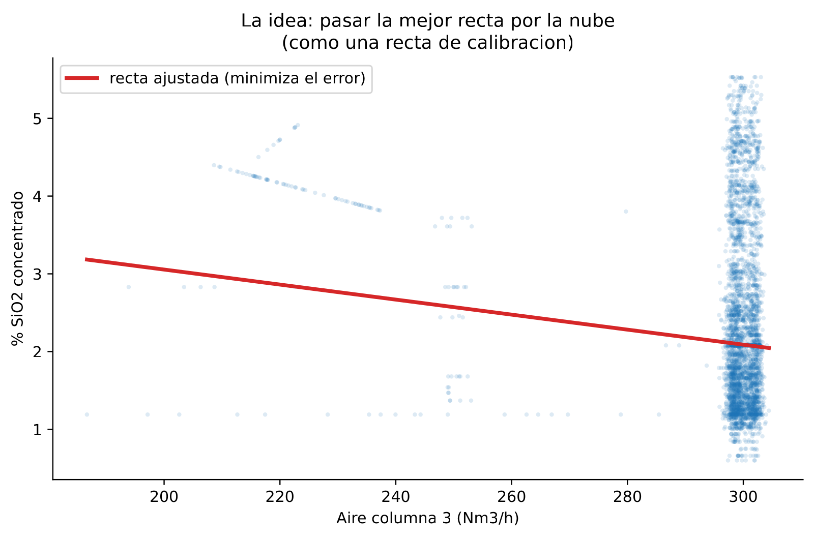
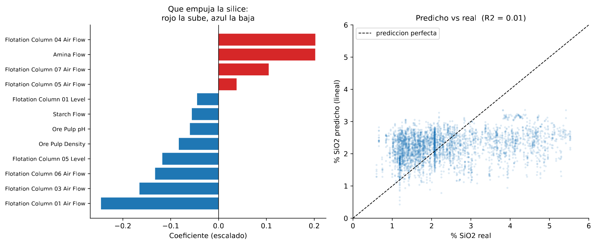
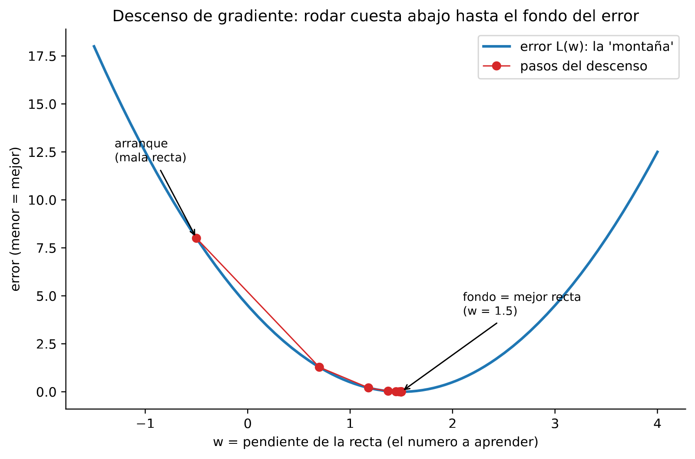
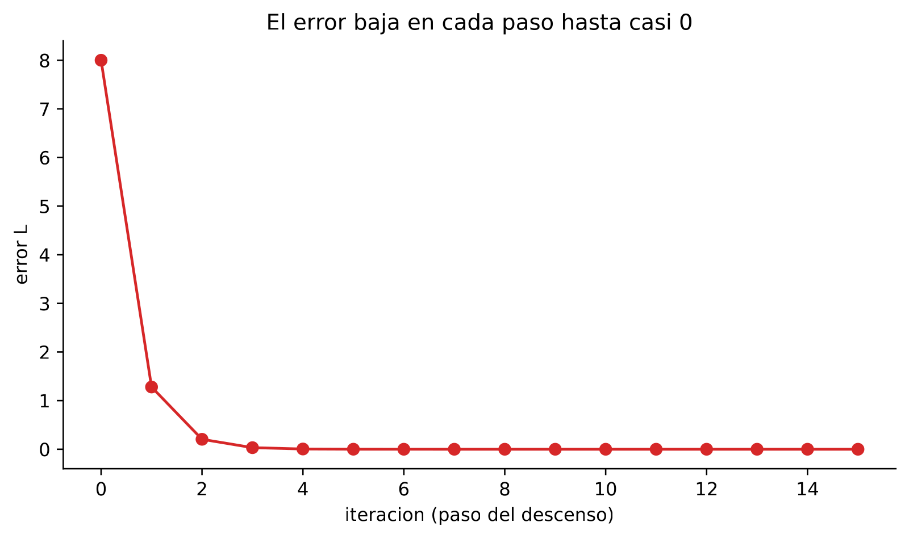
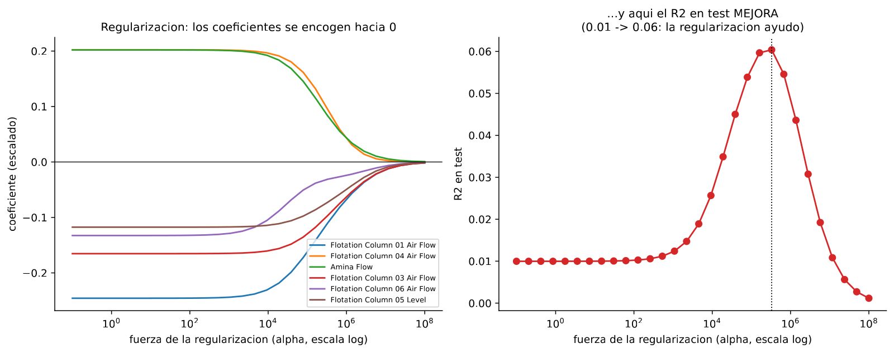

En 30 segundos
- R² 0,06 con regularización, seis veces mejor que el 0,010 de la recta sin tocar. Sigue siendo poco, y sigue siendo el mejor lineal del proyecto.
- El descenso de gradiente es el motor de todo. Aquí se calcula a mano, y converge partiendo la distancia por la mitad en cada paso.
- La tasa de aprendizaje decide si converge o rebota. Con 0,2 acierta en un paso. Con 0,4 oscila para siempre.
- Regularizar no es adornar. Encogiendo los coeficientes el R² sube de 0,010 a 0,061, y pasado el punto dulce vuelve a caer a 0,001.
- La recta ve lo mismo que el árbol, aire y amina, pero solo capta relaciones rectas.
Qué resuelve este módulo
El módulo 2 entrenó modelos sin mirar por dentro. Aquí se abre el motor.
Se ajusta una recta, se define qué significa que un modelo esté equivocado, y se baja ese error paso a paso. Ese procedimiento, el descenso de gradiente, es el mismo que entrena una red neuronal de mil millones de parámetros.
Y aparece la primera perilla que sí mueve el resultado en este proyecto: la regularización.
Antes de la teoría: un ejemplo de juguete
Dos lotes. De cada uno se sabe cuánto se subió el aire por encima de lo normal, y cuánta sílice salió de más.
| Lote | Aire de más | SiO₂ de más |
|---|---|---|
| 1 | 1 | 2 |
| 2 | 2 | 4 |
Se busca un solo número, la pendiente, que llamaremos w. La predicción es w por el aire de más. A ojo se ve que w = 2 acierta en los dos lotes. Vamos a llegar ahí sin mirar.
Paso 1. Definir qué significa estar equivocado
El error es el promedio de los fallos al cuadrado.
error(w) = [ (w·1 − 2)² + (w·2 − 4)² ] / 2Desarrollando, los dos términos son múltiplos de lo mismo:
error(w) = [ (w−2)² + 4·(w−2)² ] / 2 = 2,5 · (w−2)²Es una parábola con el fondo en w = 2. Encontrar la mejor recta es bajar hasta ese fondo.
Paso 2. Empezar en un sitio malo
Arrancamos en w = 0, que es predecir siempre cero.
error(0) = 2,5 · (0−2)² = 2,5 · 4 = 10Paso 3. Saber hacia dónde es cuesta abajo
La pendiente de la parábola en un punto dice hacia dónde sube. Para esta parábola vale:
gradiente(w) = 5 · (w − 2)
gradiente(0) = 5 · (−2) = −10Negativo significa que el error baja si w aumenta. La regla del descenso resta el gradiente multiplicado por un factor pequeño, la tasa de aprendizaje. Con tasa 0,1:
w nuevo = 0 − 0,1 · (−10) = 1Paso 4. Repetir, y ver el patrón
| Paso | w | error | gradiente | w siguiente |
|---|---|---|---|---|
| 1 | 0 | 10 | −10 | 1 |
| 2 | 1 | 2,5 | −5 | 1,5 |
| 3 | 1,5 | 0,625 | −2,5 | 1,75 |
| 4 | 1,75 | 0,15625 | −1,25 | 1,875 |
Cada paso recorta a la mitad la distancia que falta. El error se divide entre cuatro cada vez. Nunca llega exactamente a 2, pero se acerca todo lo que haga falta.
Paso 5. La tasa de aprendizaje decide si funciona
Con tasa 0,2 el primer paso cae justo en el fondo:
w nuevo = 0 − 0,2 · (−10) = 2 acertó a la primeraCon tasa 0,4 pasa de largo y vuelve al principio:
w = 0 -> 0 − 0,4·(−10) = 4
w = 4 -> 4 − 0,4·(+10) = 0
w = 0 -> otra vez 4 ...Rebota para siempre entre 0 y 4 sin acercarse nunca. Esa es la tasa de aprendizaje: el tamaño del paso. Demasiado corto y tarda una eternidad. Demasiado largo y no converge.
Glosario
12 términos, en palabras simples
- Regresión lineal. Un modelo que suma cada variable multiplicada por un número propio. Predice trazando una recta o un plano.
- Coeficiente. El número que multiplica a una variable. Dice cuánto cambia la predicción si esa variable sube una unidad.
- Función de pérdida. La fórmula que mide lo equivocado que está el modelo. Aquí, el promedio de los fallos al cuadrado.
- Gradiente. La pendiente de la función de pérdida. Señala hacia dónde crece el error.
- Descenso de gradiente. Repetir pasos pequeños en la dirección contraria al gradiente, hasta llegar al fondo.
- Tasa de aprendizaje. El tamaño del paso. En inglés, learning rate.
- Convergencia. Que los pasos dejen de cambiar el resultado de forma apreciable.
- Escalado. Poner todas las variables en la misma escala antes de entrenar.
- Regularización. Un castigo añadido a la pérdida por tener coeficientes grandes. Obliga al modelo a ser más simple.
- Ridge. Regularización que encoge todos los coeficientes hacia cero sin anular ninguno.
- Lasso. Regularización que sí lleva coeficientes a cero exacto, así que también selecciona variables.
- Alfa. La perilla de la regularización. Cuanto más alta, más se encogen los coeficientes.
Paso a paso
Paso 1. Escalar antes de nada
Los caudales de aire rondan 300 Nm³/h y el pH ronda 9,5. Sin escalar, el aire domina cualquier comparación de coeficientes solo por ser un número más grande.
Escalar resta la media y divide por la desviación estándar. Después, un coeficiente de 0,2 significa lo mismo venga de donde venga.
Paso 2. Ajustar la recta y leerla
Una regresión lineal sobre las 21 columnas da 21 coeficientes. Cada uno tiene signo, y el signo es lo primero que hay que auditar contra la química.
Paso 3. Comprobar que la recta es capaz de poco
Una recta solo capta relaciones rectas. Si el proceso tiene un óptimo intermedio, la recta lo pierde entero.
Paso 4. Castigar los coeficientes grandes
La regularización añade a la pérdida un castigo proporcional al tamaño de los coeficientes. El modelo tiene entonces dos objetivos a la vez. Acertar, y no exagerar.
Con datos ruidosos y poca señal, exagerar es exactamente lo que hace daño.
Paso 5. Elegir la perilla mirando la curva
Alfa no se pone por defecto. Se barre en escala logarítmica y se dibuja el resultado. El punto dulce se ve, y el desplome de después también.
El código, por partes
Paso 1. Escalar y ajustar la recta
from sklearn.linear_model import LinearRegression
from sklearn.preprocessing import StandardScaler
scaler = StandardScaler().fit(X_train)
model = LinearRegression().fit(scaler.transform(X_train), y_train)
print(f"R2 test: {r2_score(y_test, model.predict(scaler.transform(X_test))):.3f}")línea por línea, 4 entradas
StandardScaler()- Pone cada columna en media cero y desviación uno.
.fit(X_train)- Aprende la media y la desviación SOLO del entrenamiento. Usar también el test sería fuga.
.transform(...)- Aplica esa transformación. Se ajusta una vez y se aplica a los dos conjuntos.
LinearRegression()- La recta, o el plano cuando hay muchas variables.
Regresion lineal (escalada): RMSE 1.130 MAE 0.873 R2 0.010R² 0,010. Peor que el árbol de profundidad 3, que daba 0,038.

Paso 2. Leer los coeficientes y auditar los signos
import pandas as pd
coefs = pd.Series(model.coef_, index=feats).sort_values(key=abs, ascending=False)
print(coefs.head(6).round(3).to_string())línea por línea, 3 entradas
model.coef_- La lista de coeficientes aprendidos, en el mismo orden que las columnas.
pd.Series(valores, index=nombres)- Pega cada número con el nombre de su variable.
.sort_values(key=abs)- Ordena por tamaño sin mirar el signo, para ver los más influyentes.
Coeficientes mas fuertes (escalados; signo = sube/baja la silice):
-0.246 Flotation Column 01 Air Flow
+0.202 Flotation Column 04 Air Flow
+0.202 Amina Flow
-0.165 Flotation Column 03 Air Flow
-0.133 Flotation Column 06 Air Flow
-0.118 Flotation Column 05 Level
Dos cosas para auditar. La primera es buena: aparecen las mismas variables que el árbol y la correlación, aire y amina. La segunda es rara: la columna 1 y la columna 4 salen con signos opuestos siendo las dos aire.
Eso no es química, es el modelo repartiendo como puede una señal que apenas existe. Con coeficientes pequeños y variables correlacionadas entre sí, los signos individuales dejan de ser fiables.
Paso 3. El descenso de gradiente, en código
w, tasa = 0.0, 0.1
for paso in range(4):
gradiente = 5 * (w - 2)
print(f"w={w:5.3f} error={2.5*(w-2)**2:7.5f} gradiente={gradiente:+6.2f}")
w = w - tasa * gradientelínea por línea, 4 entradas
w, tasa = 0.0, 0.1- Asigna dos valores en una línea.
warranca mal a propósito. range(4)- Los números 0, 1, 2, 3. Cuatro vueltas al bucle.
w = w - tasa * gradiente- La regla entera del descenso de gradiente. Todo lo demás en machine learning es esta línea con más dimensiones.
f"{w:5.3f}"- Formatea el número con 3 decimales y 5 caracteres de ancho, para que la tabla quede alineada.
w final: 1.5 (verdadero = 1.5)
error inicial: 8.0 -> final: 0.0
Figures: fig_m3_gradiente_valle.pdf, fig_m3_gradiente_curva.pdf

Paso 4. Regularizar, y barrer la perilla
from sklearn.linear_model import Ridge
import numpy as np
for alpha in [1e2, 1e4, 1e5, 2.15e5, 1e6, 1e8]:
ridge = Ridge(alpha=alpha).fit(scaler.transform(X_train), y_train)
r2 = r2_score(y_test, ridge.predict(scaler.transform(X_test)))
print(f"alpha {alpha:>12,.0f} R2 {r2:+.4f}")línea por línea, 3 entradas
Ridge(alpha=...)- La regresión lineal con castigo por coeficientes grandes.
1e2- Notación científica: 1 por 10 elevado a 2, o sea 100.
np.logspace- Genera valores repartidos en escala logarítmica. Alfa se barre así porque abarca muchos órdenes de magnitud.
sin regularizar (alpha=0): R2 +0.0100
mejor alpha: 215,443 -> R2 +0.0607
alpha 100 R2 +0.0102
alpha 10,000 R2 +0.0266
alpha 100,000 R2 +0.0562
alpha 1,000,000 R2 +0.0489
alpha 100,000,000 R2 +0.0012El resultado, medido
Qué esperábamos. Que la recta fuera peor que el árbol, porque el proceso no es lineal. Y que la regularización cambiara poco, como suele pasar cuando hay medio millón de filas.
Qué salió. Lo primero sí. Lo segundo no.
| Modelo | R² prueba |
|---|---|
| Recta sin regularizar | 0,010 |
| Árbol, profundidad 3 (módulo 2) | 0,038 |
| Recta regularizada, alfa 215.443 | 0,061 |
La regularización multiplica el R² por seis, de 0,010 a 0,061. Con eso, el mejor lineal supera a los tres modelos de árbol del módulo 2.

Qué significa. Que la señal es tan débil que el modelo sin castigo se dedica a ajustar ruido. Encogiendo los coeficientes casi hasta desaparecer, generaliza mejor.
El alfa ganador es enorme, 215.443. En un problema con señal clara, un alfa así aplastaría el modelo. Aquí es justo lo que hace falta, y esa es la medición honesta del proyecto: hay muy poco que aprender.
Y la curva enseña las dos caídas. Con alfa 100 no regulariza nada y se queda en 0,0102. Con alfa cien millones aplasta todo y cae a 0,0012. El punto dulce hay que buscarlo, no suponerlo.
Lo que este módulo deja abierto
El alfa de 215.443 se eligió mirando el resultado en el conjunto de prueba. Eso es hacer trampa, aunque sea una trampa pequeña y muy común.
El conjunto de prueba se toca una vez, al final. Si se usa para elegir perillas, deja de ser una medida honesta. El módulo 4 arregla eso con validación cruzada, y de paso descubre que el resultado era más optimista de lo que parecía.
Ojo
- La tasa de aprendizaje no se pone a ojo. Con 0,2 el ejemplo acierta en un paso y con 0,4 rebota para siempre. Es la perilla más traicionera del descenso de gradiente.
- Escalar es obligatorio si vas a comparar coeficientes. Sin escalar, el coeficiente más grande suele ser el de la variable con las unidades más pequeñas.
- El escalador se ajusta solo con el entrenamiento. Calcular la media con todos los datos mete información del futuro. Es fuga por preprocesamiento.
- Los signos de coeficientes pequeños no son fiables. Aquí dos columnas de aire salen con signo opuesto. No es química, es reparto arbitrario entre variables parecidas.
- Un alfa enorme no es un error. Es el dato diciendo que hay poca señal. Se reporta, no se disimula.
- Elegir la perilla mirando el test es trampa. El módulo 4 lo corrige, y el número baja.
Puente metalúrgico
El descenso de gradiente es buscar el punto óptimo de una variable de operación sin conocer la curva. Un operador que busca la dosificación de espumante que maximiza la recuperación no tiene la curva dibujada. Sube un poco la dosis, mira si la recuperación mejora, y decide el siguiente movimiento con esa información.
La tasa de aprendizaje es el tamaño del ajuste. Mover la dosis de a 1 gramo por tonelada tarda un turno entero en llegar. Moverla de a 200 se pasa de largo, la espuma se descontrola, y el operador corrige en exceso hacia el otro lado. El proceso oscila y no se estabiliza nunca. Es exactamente el rebote entre 0 y 4 del ejemplo.
La regularización es no fiarse de un solo ensayo. Si una prueba de laboratorio sugiere un cambio grande de reactivos, el metalurgista experimentado no lo aplica entero. Aplica una parte y espera confirmación. Encoger el coeficiente es esa misma prudencia, escrita como fórmula.
Repaso
¿Qué es el descenso de gradiente, en una frase que se pueda decir en una entrevista?
Es bajar una cuesta a ciegas, tanteando la pendiente bajo los pies y dando un paso hacia abajo, una y otra vez.
La cuesta es la función de pérdida, que mide lo equivocado que está el modelo. El gradiente es la pendiente en el punto donde estás. Se resta el gradiente multiplicado por la tasa de aprendizaje, y eso da el siguiente punto.
En el ejemplo de este módulo se arranca en cero con tasa 0,1. Cada paso recorta la distancia a la mitad: 0, luego 1, luego 1,5, luego 1,75. Es el mismo procedimiento que entrena una red neuronal con miles de millones de parámetros.
Con tasa 0,4 el ejemplo rebota entre 0 y 4 para siempre. ¿Por qué?
Porque el paso es más largo que la distancia al fondo, y aterriza al otro lado a la misma altura.
En w = 0 el gradiente vale −10, así que el paso es 0,4 por 10, o sea 4. Salta a w = 4. Ahí el gradiente vale +10, el paso vale 4 otra vez, y vuelve a 0. El error es idéntico en los dos puntos, así que nunca mejora. Es lo mismo que un operador que corrige de más en cada turno: el proceso oscila y no converge.
La regularización sube el R² de 0,010 a 0,061. ¿Qué dice eso sobre los datos?
Dice que hay muy poca señal. La regularización solo ayuda cuando el modelo sin castigo se está dedicando a ajustar ruido.
El alfa ganador es 215.443, un valor enorme. Un alfa así encoge los coeficientes casi hasta cero. El modelo mejora seis veces al quedarse casi mudo, así que casi todo lo anterior era ruido. La lectura no es "la regularización funciona muy bien". Es "estos datos tienen muy poco que contar".
Dos columnas de aire salen con signos opuestos. ¿Se puede explicar con química?
No, y pretenderlo sería inventar. Los dos coeficientes valen −0,246 y +0,202, que son valores pequeños sobre variables escaladas.
Cuando varias variables están correlacionadas entre sí y la señal es débil, la regresión reparte el peso entre ellas de forma casi arbitraria. Un pequeño cambio en los datos puede darle la vuelta a los signos. La lectura correcta es que el bloque de columnas de aire importa, sin atribuir dirección a cada columna por separado. Eso lo confirma la importancia del bosque, que sí señala aire de forma consistente.
El alfa se eligió mirando el conjunto de prueba. ¿Qué problema tiene?
Que el conjunto de prueba deja de ser una medida honesta en cuanto se usa para decidir algo.
Probar 28 valores de alfa y quedarse con el que mejor puntúa en el test convierte al test en parte del entrenamiento. El 0,061 reportado es entonces optimista, porque incorpora una decisión tomada con esa misma información. Lo correcto es elegir la perilla con validación cruzada dentro del entrenamiento, y tocar el test una sola vez al final. El módulo 4 hace eso, y el número resultante es bastante peor.